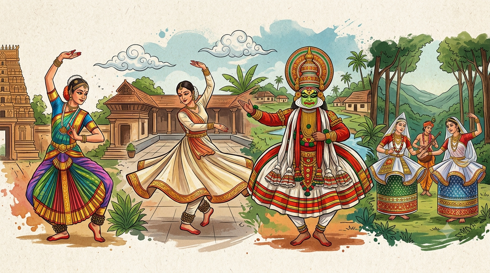

විදේශීය නැටුම්
ලෝකයේ විවිධ රටවල විවිධ සංස්කෘතික පසුබිම් මත විදේශීය නර්තන ශෛලීන් බිහි වී ඇත.
සංගීතය, ඇඳුම් පැළඳුම් සහ චලන රටා අනුව එක් එක් රටවල නර්තන ක්රම වෙනස් වේ.
💃 Ballet Dance
ශරීර පාලනය, සමබරතාවය සහ අලංකාර චලන සඳහා ප්රසිද්ධ බටහිර නර්තන ශෛලියකි.
🔥 Hip Hop Dance
නවීන සංගීතය සමඟ වර්ධනය වූ ජනප්රිය නර්තන ශෛලියකි.
🌎 Latin Dance
Salsa, Tango වැනි රිද්මවත් නර්තන ක්රම මෙයට ඇතුළත් වේ.